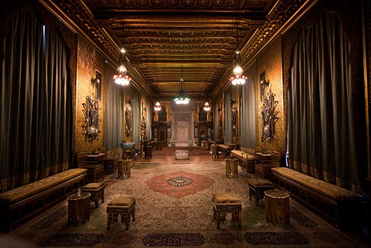

Castelul Pelisor
Castelul Pelișor este un palat de mici dimensiuni construit pe domeniul castelului Peleș (în valea Prahovei). Ridicat între 1899 și 1902 de arhitectul ceh Karel Liman și decorat de artistul vienez Bernhardt Ludwig, castelul Pelișor a devenit, începând cu anul 1903, reședința de vară a principilor moștenitori ai României.
Castelul Pelisor a fost deschis publicului vizitator in februarie 1993. Muzeul, cu o valoare inestimabila, ce cuprinde o valenta istorica, o alta memorialistica si una artistica, constituie o importanta componenta a zestrei culturale a poporului roman. Acest edificiu este parte integranta a vastului ansamblu arhitectonic creat de regele Carol I pe valea paraului Peles, intr-o perioada ce se suprapune practic intregii sale vieti traita in Romania. In paralel cu castelul Peles, au fost construite in apropiere Casa Cavalerilor, Economatul, Casa Corpului de Garda, Casa Arhitectilor, Casa Gradinii, iar mai tarziu, intre 1899 – 1902, Castelul Pelisor, un dar oferit de regele Carol I principilor moştenitori.
Arhitectul şef al castelului Pelisor, Karel Liman, respecta cerintele comanditarului pentru arhitectura exterioara, cu elemente "Fachwerk”, adaugand insa si elemente romanesti, ce dau cladirii o notă vesela: cele doua turnuri acoperite cu olane de gresie colorata, aidoma turlelor de biserici din Bucovina.
Mobilierul și decorațiunile interioare, realizate în bună măsură de către Bernhard Ludwig, indică un spațiu rezidențial (hall, cabinete de lucru, capela, "camera de aur"), tributar inovațiilor mișcărilor artistice de la începutul secolului al XX-lea.
Pelișor are doar 99 de încăperi, față de Castelul Peleș cu 160 de încăperi. Întreaga casă a fost decorată pentru a fi o reședință princiară, și poartă amprenta unei personalități puternice: a reginei Maria. Holul de onoare este lambrisat cu lemn de stejar. Dormitorul de aur este decorat după planurile și desenele reginei cu mobilă sculptată în lemn de tei aurit. Tot după planurile reginei a fost decorat și biroul ei, iar pereții Camerei de aur sunt decorate cu frunze de ciulini, motiv drag reginei întrucât era emblema Scoției, locul natal al ei. Aici au crescut și copiii lor: Carol (viitorul rege Carol al II-lea), Mărioara (regina Iugoslaviei), Elisabeta (regina Greciei) și Nicolae.
Principalele săli sunt:
Holul de onoare, rafinat prin simplitate, lambrisat cu casetoane din lemn de stejar. Remarcabil se dovedește luminatorul împodobit cu vitralii, element de arhitectură specific artei anilor 1900.
Biroul regelui Ferdinand impune prin solemnitate. Din garnitura mobilierului în stilul neorenașterii germane, se detașează biroul din lemn de nuc, placat cu trei panouri sculptate care înfățișează castelele Peleș, Pelișor și Foișor.
Capela integrată apartamentului reginei Maria se află într-un spațiu placat cu marmură de Ruschița, accesibil printr-o arcadă cu coloane, aurită, ce poartă o inscripție emblematică. Nota de reculegere conferă vitraliile decorate cu antrelacuri ce filtrează o lumină fascinantă.
Dormitorul de aur este mobilat cu piese realizate la 1909 în Atelierele de Arte și Meserii de la Sinaia (școală înființată de rege), după planurile și desenele reginei. Sculptate în lemn de tei, aurite, ele poartă în decorație antrelacul de inspirație celtică și elementul zoomorf bizantin, interpretat în maniera Artei 1900.
Camera de aur, încăperea pivot a palatului, este insolită ca decorație. Pereții din stuc aurit poartă frunze de ciulini, motiv drag reginei întrucât era emblema orașului Nancy, capitala Art-Nouveau-lui, dar și legat de Scoția, locul natal al Mariei. Mobilierul decorat cu elemente celtice și bizantine este pus în valoare și de luminatorul cu forma unei cruci celtice de pe plafon.
Biroul reginei Maria, amplasat într-un interior împodobit cu coloane brâncovenești și un cămin specific interioarelor românești, cuprinde un mobilier conceput de regină. Scaunele și masa pentru corespondență sunt decorate cu simbolurile Mariei, crinul și crucea gamată.
Castelul Pelișor deține o valoroasă colecție de artă decorativă aparținând Art-Nouveau-ului, printre care lucrări ale unor artiști ca E. Galle, frații Daum, J. Hoffmann, L.C. Tiffany, Gurschner etc. O mențiune specială merită manuscrisul - pergament pictat realizat de Maria și dăruit lui Ferdinand în 1906. Arta plastică poate fi grupată sub genericul "Tinerimea artistică", mișcare patronată de regină, ce reunea artiști români aflați la începutul carierei.